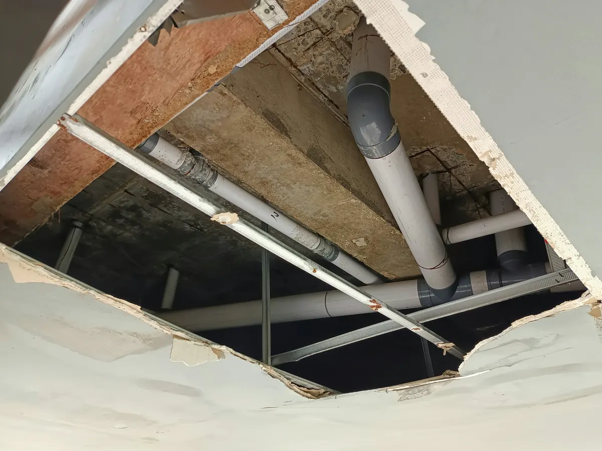

When you’re renovating a kitchen, bathroom, or whole home, it’s tempting to focus on fixtures, finishes, and layout. But before any pipe is run or wall is closed, a licensed, responsible plumber must evaluate structural conditions. Ignoring structural red flags—like holes bored along the bottom edge of framing, cracked floor joists, or deteriorated studs—can lead to code violations, water damage, costly rework, and legal liability for the installer.

This is why homeowners and contractors choose Angle Stop Plumbing. We put structural integrity and code compliance at the center of every renovation, so your plumbing performs flawlessly—and your project passes inspection the first time.
Why structural checks are a plumber’s obligation
- Safety and performance: Plumbing depends on stable framing. Weak or damaged members can shift, stressing joints and causing leaks over time.
- Code compliance: Building codes strictly limit where and how you can notch or bore framing. Violations can fail inspections and require demolition to correct.
- Liability protection: If a plumber drills in prohibited zones, runs piping through compromised members, or conceals known defects, they can be held liable for resulting failures and damages.
- Long‑term value: Proper routing, protection plates, and compliant penetrations preserve your home’s strength and resale value.
Common structural red flags that must be addressed before plumbing
- Holes near the bottom edge of joists/studs: Boring too close to the tension edge significantly weakens load‑bearing capacity.
- Oversized bores and excessive notching: Penetrations that exceed code allowances or occur at prohibited locations (like supports or mid‑span zones).
- Cracked or split floor joists and studs: Existing damage from previous work, over‑boring, or load issues that demand repair or reinforcement.
- Deteriorated framing: Rot, mold, termite damage, or delamination around wet areas (showers, tubs, under sinks) that compromises fastener hold and stability.
- Altered beams and missing connectors: Cut flanges, trimmed beams, or absent joist hangers that can’t safely carry design loads.
If any of these conditions exist, responsible plumbers pause work, document the issue, and coordinate the necessary structural repair before proceeding.
What responsible, licensed plumbers do before closing walls
- Inspect and document
- Open‑wall review of joists, studs, and chases in the work area.
- Photos and notes of questionable notching/boring or visible damage.
- Clear communication to the homeowner/GC about risks and next steps.
- Plan code‑compliant routing
- Choose pipe paths that minimize penetrations and avoid prohibited zones.
- Follow boring/notching limits and install nail plates and sleeves at penetrations.
- Provide alternatives (e.g., soffits, chase adjustments) when framing won’t allow safe routing.
- Coordinate structural corrections
- Recommend qualified carpentry or structural repair when cracks, edge bores, or deterioration are found.
- Sequence plumbing after reinforcement or sistering is complete.
- Keep a paper trail: change orders, inspection notes, and approvals.
- Verify and protect
- Pressure test, insulate where required, and install firestopping.
- Do not conceal work until structural fixes are verified and inspections are passed.
Risks of skipping structural due diligence
- Hidden leaks and sudden failures: Movement in weakened framing stresses joints and fittings.
- Failed inspections and delays: Noncompliant penetrations trigger tear‑outs, rework, and extra cost.
- Water damage and mold: Small, undetected leaks in compromised framing escalate quickly.
- Legal and financial liability: The installer can be responsible for repairs, damages, and code penalties.
Why homeowners and contractors choose Angle Stop Plumbing
- Licensed, accountable professionals: We’re trained to spot—and solve—structural conflicts before they become expensive problems.
- Red‑flag expertise: From holes at the bottom edge of framing to cracked joists and deteriorated studs, we identify issues early and provide practical solutions.
- Seamless coordination: We work with your GC and qualified trades to complete any needed reinforcement so plumbing can proceed safely and to code.
- Compliance, end‑to‑end: Thoughtful routing, protection plates, firestopping, pressure testing, and clear documentation for smooth inspections.
- Peace of mind: We won’t cover walls until structural concerns are addressed and approved—protecting your investment and timeline.
Renovating soon? Build it on a solid foundation.
If you’re planning a remodel or have uncovered suspect framing—holes along the bottom edge, oversized bores, cracked floor joists, or deteriorated members—bring in a licensed, responsible team that puts structure first.
Contact Angle Stop Plumbing to schedule a renovation readiness review. We’ll document red flags, coordinate the right fixes, and deliver code‑compliant plumbing you can trust long after the walls are closed.